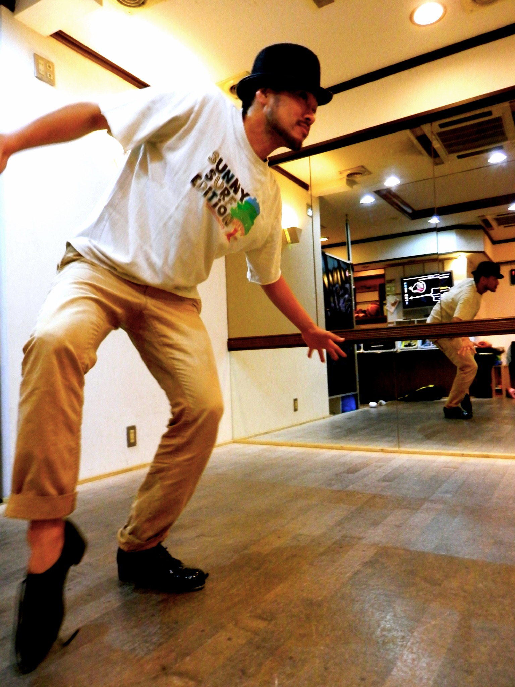
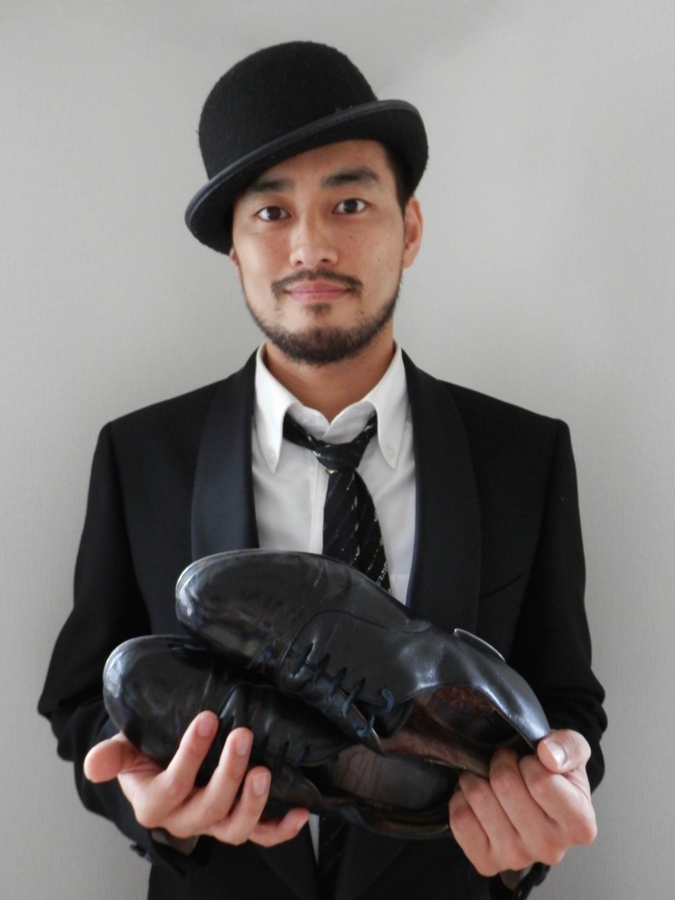

MEDIA / OFFICIAL LINKS
Watch.
Follow. Learn.
映像、SNS、スタジオ、プロジェクト。古庄里好と現在の活動を確認できる公式・公開リンクを、目的から選べる形でまとめています。

NORITAKA FURUSHO / ON STAGE
古庄里好が踊る。
代表作と出演映像。
代表作『木箱』をはじめ、古庄里好が出演したタップダンスの作品やステージ映像を紹介します。

SIGNATURE PERFORMANCE
『木箱』
古庄里好の代表作 / オリジナル作品
古庄里好のオリジナル・タップダンス作品。『木箱』を通して、自身のパフォーマンスを映像でご覧ください。
『木箱』をYouTubeで見る → 写真：過去の舞台公演より 02 / PERFORMANCE RECORDダンス天竺｜NORIタップパフォーマンス（2000年）過去の出演・実演アーカイブ動画を見る →
02 / PERFORMANCE RECORDダンス天竺｜NORIタップパフォーマンス（2000年）過去の出演・実演アーカイブ動画を見る →
 03 / PERFORMANCE RECORDルパン三世のテーマ｜アニソンタップ振付・出演（SHO-KOと共演）動画を見る →
03 / PERFORMANCE RECORDルパン三世のテーマ｜アニソンタップ振付・出演（SHO-KOと共演）動画を見る →
 04 / PERFORMANCE RECORDアニメ×タップダンス｜オリジナル振付振付・出演（SHO-KOと共演）動画を見る →
04 / PERFORMANCE RECORDアニメ×タップダンス｜オリジナル振付振付・出演（SHO-KOと共演）動画を見る →
 05 / PERFORMANCE RECORDSt. Thomas｜生バンドとタップセッション出演（ミヤゴリーズ Bar × NORI）動画を見る →
05 / PERFORMANCE RECORDSt. Thomas｜生バンドとタップセッション出演（ミヤゴリーズ Bar × NORI）動画を見る →
 06 / STAGE ARCHIVEDANCING HEART 2010｜スウィングしなけりゃTAPぢゃない舞台作品アーカイブ / 冨田かおるタップダンスカンパニー動画を見る →
06 / STAGE ARCHIVEDANCING HEART 2010｜スウィングしなけりゃTAPぢゃない舞台作品アーカイブ / 冨田かおるタップダンスカンパニー動画を見る →
 07 / SOLO ARCHIVE池袋スタジオの記憶（2006年）古庄里好によるヒップホップタップ・ソロ動画を見る →
07 / SOLO ARCHIVE池袋スタジオの記憶（2006年）古庄里好によるヒップホップタップ・ソロ動画を見る →
 08 / PERFORMANCE & CHOREOGRAPHYナショナルタップディ（昼）出演・後半振付：古庄里好動画を見る →
08 / PERFORMANCE & CHOREOGRAPHYナショナルタップディ（昼）出演・後半振付：古庄里好動画を見る →
過去の舞台出演、共演作品、生バンドとのセッションなど、さまざまなタップダンスの映像を紹介しています。
PHOTO GALLERY
写真で見る、古庄里好。

FILM / COMMERCIAL / MUSIC VIDEO